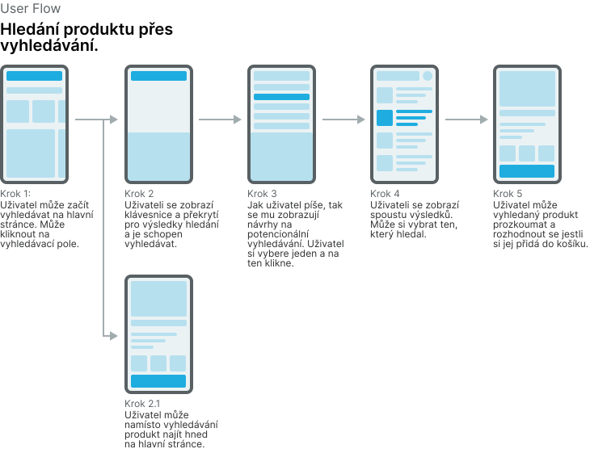
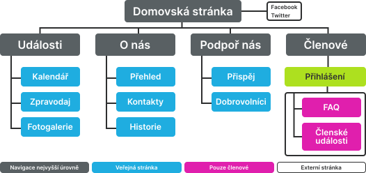

User Flows a Sitemap
Tato část se zaměřuje na User Flows a Sitemapy. Najdete tu informace o tom, co to User Flows a Sitemapy jsou a jak je vytvořit.
User Flows
User Flow představuje nákres ukazující sérii kroků, které musí uživatel provést k dokončení nějaké akce. Většinou se skládá z různých stránek propojených šipkami. User Flows můžeme vytvářet proto, abychom si sami ujasnili jakým způsobem něco vlastně uděláme a nebo třeba pokud někomu z našeho týmu chceme ukázat, jakým způsobem něco zamýšlíme udělat. Následující ukázka ukazuje příklad User Flow, která popisuje hledání produktu na nějakém e-shopu.
Vytváření User Flow
Myslím že po prozkoumání předchozí ukázky víte jak User Flows vytvářet, takže se nebudu pouštět do žádného textového návodu. Namísto toho pro vás mám pár tipů, kterých se při vytváření User Flows můžete držet.
- Každá User Flow kterou vytvoříme by měla mít název, který ji přesně popisuje.
- User Flow by měla mít jen jeden směr. Může obsahovat pár odbočení, ale nic šíleného.
- Každý krok v User Flow bychom měli dostatečně popsat.
- User Flow je v podstatě příběh. Měla by mít nějaký cíl, nějaký závěr. Také by neměla být moc dlouhá abychom neztratili posluchače.
- User Flow by měla popisovat kompletní úkol.
- Při vytváření User Flow neděláme Flow Mapy. Neděláme žádné šílené nákresy, vyprávíme příběh.
- Pokud vytváříme více User Flows, tak není špatné si je nějak rozdělit. Přidat jim kategorie atd.
Sitemap
Sitemapa je nákres, který popisuje strukturu webových stránek. Je to takový hierarchický diagram, ukazující jakým způsobem jsou jednotlivé stránky uspořádány. Vytváříme ji hlavně proto, aby nám pomohla při vytváření navigace nebo abychom s její pomocí mohli třeba strategicky určit, kde umístit nějaký obsah, aby jej mohli uživatelé snadno najít. Následující ukázka příklad Sitemapy ukazuje.
Vytváření Sitemapy
Stejně jako u User Flow, tak i u Sitemapy nebudu popisovat jak ji vytvořit. Myslím že je to celkem jasné, když se podíváte na předchozí ukázku. Sitemapy mohou mít různou podobu, záleží na nás co nám vyhovuje a jakým způsobem si je vytvoříme. Zde jsem vypsal pár tipů, které by se vám při tvorbě Sitemapy mohli hodit.
- Při vytváření Sitemapy můžeme použít naše sketche a User Flows.
- Stránky sitemapy můžeme barevně odlišit a přidat legendu s popisem co jednotlivá barva znamená.
- Není potřeba na Sitemapě ztrácet mnoho času. Nemusí být perfektní, vždy ji můžeme později vylepšit.